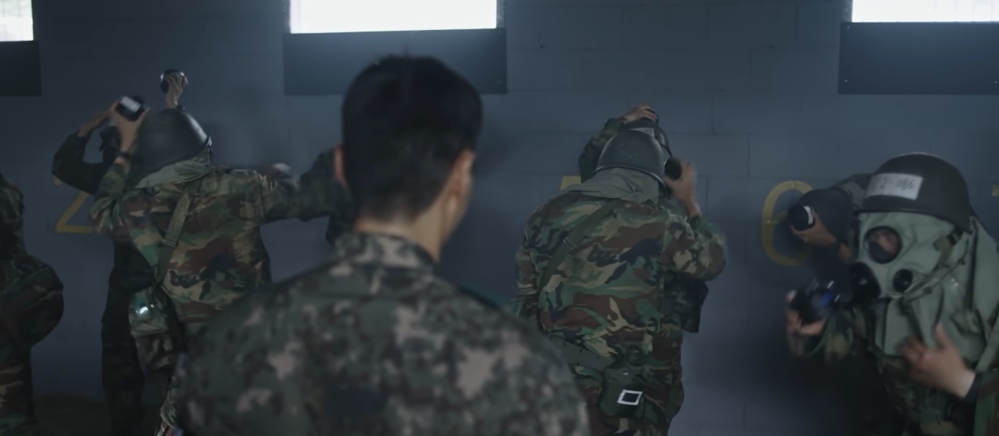

막상 지금 와서 생각해보니 이런 경험 언제해보나싶음
화학전이 얼마나 무서운지 체감하게 되는 ㄷㄷㄷ
진짜 어렸을때 멋모르고 했으니까 다행이지
30대인 지금 생각해보면 아마 기절할듯싶다ㅋㅋㅋㅋ

막상 지금 와서 생각해보니 이런 경험 언제해보나싶음
화학전이 얼마나 무서운지 체감하게 되는 ㄷㄷㄷ
진짜 어렸을때 멋모르고 했으니까 다행이지
30대인 지금 생각해보면 아마 기절할듯싶다ㅋㅋㅋㅋ
어짜피 전시되면 전시용 방독면 줌
위력약한것도 이정도인데
연말즈음 신교대에 분대장 교육받으러 갔는데 미친놈들이 탄소모 해야된다고 cs탄 존나게 쳐까대서 좆같았음
그나마 야외라 바람 등지면 무력화 가능했는데
한번은 반대편에 신병들 야외숙영하다가 cs탄 바람타고 쓸고가서 신병들 도망가고 넘어지고 난리남
조교 중대장한테 개털리더라 ㅋㅋ
훈련소에서 한번 했었는데 그리 빡쎄지 않았는데 전경부대 가서 최루액 정비하다가 눈에 들어가서 바로 응급실 실려감 ㅋㅋㅋ
언제나 훈련소 황금밸런스 행군 20km 화생방 10분이였던가??
10분? 허허...
겨울에 코감기 제대로 걸린 채로 입대했었는데 거의 훈련소 내내 달고 살았음. 근데 화생방 한번 하고 나서 뚝 떨어지고 그날 꿀잠 잠 ㅋㅋ
저때 점심으로 짜장면 나왔었는데 화생방실 바닥에 면 굴러다니더라.... 방독면 벗자마자 바닥에 면 있는거 신경쓸 겨를도 없이 그 바닥에서 피티체조하고 군가부르고 엉엉 울면서 튀어나간 기억 생생함 ㅋㅋㅋ
난 조교라서 화생방 한번도 안들어가봤는데 조교들은 군생활에서 단 한번
화생방 훈련 종료 후 남는 CS탄 전부 까서 꽉채우고 거기 방독면없이 들어가서 군가 한곡 부르고 나오는 전통이 있었음
이거하고 절대로 힘겹게 기침 몰아하거나 죽어가는 모습 보이면 안됐음 조교 가오 안산다고...
나도 ㅅㅂ 천식끼 있었는데 짬안되지만 그냥 이악물고 들어가서 부르고 멀쩡한것처럼 나와서 눈같은거 안비비고 흐르는 물에 눈씻고 그랬던 기억있네 죽을거같았는데
그래서 훈련때 CS탄을 훈련에 쓸 양은 충분하게, 다만 너무 많이 남지는 않게 조절하는게 중요했음 많이 남으면 조교들이 좆되니까... CS탄 화생방실에 하나 새로 까면 존나 독한데 그게 다 조교들이 살기위해서 현역병들한테 짬처리하던것
난 방독면 잘못 써서 지옥을 맛봄ㅋㅋㅋㅋ
나는 저거 참을만 해서 정화통 갈아끼는거 엄청 쉽게함 ㅋㅋ
아예못느끼는사람도있는데 너도 그런류인가봄ㄷㄷ
뭐지 자대 말고 훈련소 화생방 훈련때는 아예 방독면 벗어서 방독면가방에 넣는데 정화통 교체는 뭔 말이야??
맨얼굴 상태로 군가 부르고 pt체조하고 구르다가 콧물 가슴까지 길게 늘어뜨리면서 비행기자세로 줄줄이 나가는거잖아
자대에서 정화통 갈아끼우는거랑 착각하는거 아님??
나 16군번인데 논산훈련소에서 방독면 벗고 다시 끼고 정화통교체하고 끝났어
오... 난 개드립 평균 08군번이라 그 뒤에 바꼈나봄
굳이 총의 무서움을 총을 맞아봐야 알 필욘없다고 생각해
걍 존나재밌는데 ㅋㅋ
숨이 안들어쉬지니까 당황스러웠는데 끅끅 끄윽
18논산인데 우리가 꿀통 걸린거였나?
댓글이 틀딱인건가
그냥 정화통 빼고 뺀거 보여주고 바로 다시 꼈음
씹폐급 당황해서 정화통 뺐는데 다시 돌려서 끼는거 못하는 애들만 흡입하게 되지
심지어 이것마저도 얼타면 조교가 도와줌
아 애초에 방독묜 그지같이 착용한 애들도 흡입했다
보통 그럴걸 자대 가면 케바케지만 훈련소야 뭐
진짜 쉽게했네 라떼는 군가한곡 완창하고 조교 존나 소리지르고 앉았다 일어났다하고 한명 문앞에 뛰어나가려고하고 레알 1분이상있었음 참고로 06군번임
개드립에선 이게 맞음 08군번 똑같았음
공군 개 fm 대로 해서 팔벌려뛰기 30회 노래부르고 다하고 나가게 해줌. 여름에 가서 팔 걷고 들어가는데 피부에 따가움 졸라 느껴질때 이미 ㅈ 됐다는거 느껴짐
최루캡슐은 경험해볼만 하다고 생각함
최루탄은 경험조차 하면 안됨
화학전 안무섭다고 하더라. 앗 하는 순간 이미 죽는 수준이라고
유격시즌에 화생방 조교로 파견나가서 질리도록 있었는데 솔직히 조교재량으로 굴리는거라 받는사람마다 다를꺼임
초급간부들도 가끔 같이받는데 상사가 오더니 좀 빡세게 하라해서 강도 높이고 그랬음
사실 훈련의 목적으로만 따지면 개인방호구의 상태점검이 끝임
제일문제는 얼굴사이즈에 맞는 방독면의 보급이 안되서 대부분 흡입라는거라 머리끈뭉치 아무리 쪼아도 들어옴
시발 해군이라 화생방 개빡세게 받았는데 땅개새끼들 인믿어서 빡침
방독면 안쓴상태로 들어가서 5분동안 앉았다 일어났다 좌로굴러 우로굴러 피티체조 존나게 시켜서 숨 참는걸로 피할 방법도 없게 만들고 어버이의 은혜 부르게 시키고 눈물콧물 짜고있는 상태에서 방독면 쓰게 시키는데
콧물 얼굴에 다 쳐발라 가면서 쓰고 또 그상태로 피티 존나 시키고 나오는데
진심 공기의 소중함 알게됨
ㅋㅋ 해군은 di가 교육하는걸 모르는 경우 많음
난 신기한게 화생방할때마다 기침은 안했음 그냥 존나 매웠어 눈물콧물질질
원초적인 호흡을 위한 생존본능이 발휘하는 경험, 불 나면 이래서 죽는구나를 느낄 수 있는
가스 제대로 먹고 저녁에 육사먹는데 뜨거운 연기?가 식도로 들어가니 바로 기침 ㅈㄴ함; 한동안 후유증이 오래가던
입대할 때 화생방 정화통 빼서 머리위로 들고 다시 결합하는 정도로 바뀌었다고 해서 좋아했는데
막상 화생방 하니 군가 시키드만... ㅠ
나때 공군은 제대할때까지 5번해야됐다. 재수없으면 6번.
당직설때 화학장교랑 노가리까다가 들은적 있는데, 유럽과는 다르게 한반도의 지형, 기후, 국군과 북괴의 작계를 고려해보면 화학전이 많이 제한될거 같다고 하더라. 화학장교가 저렇게 말하니까 좀 웃겼음. 집체교육때 콜옵에서 화학전 테러 하는 영상 보여주던데.
최루탄을 쏘면서 시위를 막던 시절에 의경을 나와서 최루탄을 많이 쏘고 방독면도 많이 썼음 ...
덕분에 사격, 야전행동 등 다른모든건 육군애들보다 못하지만 방독면 사용은 육군애들보다
능숙하다고 자부할수 있음 K1 방독면은 KM9A1 보다 훨씬 시야도 좋고 숨쉬기도 편했음
난 저거 엄청쉬웠는데..... 오히려 몸 안움직여서 몸이편하니까 좋았음. 진짜 하루종일 화생방만 뺑뺑이 했으면 유격 개꿀이겟다 싶었음. cs탄 굽는 불판 맨앞줄에서 했는데 뭐 좀 맵고 기침나고 눈물나는 정도였지
긍께 신경작용제나 수포작용제라고 생각하면 끔찍혀 근디 가스실 들어가자마자 마스크새는거 확인당했자나 ㅡㅡ
또 한가지는 방독면 관리 개쓰레기처럼 한다는걸 깨달았음 방독면 벗기도전에 가스 다 마셨는데 만약 부대 근처에 화학탄 떨어진거면 걍 뒤지는거잖아